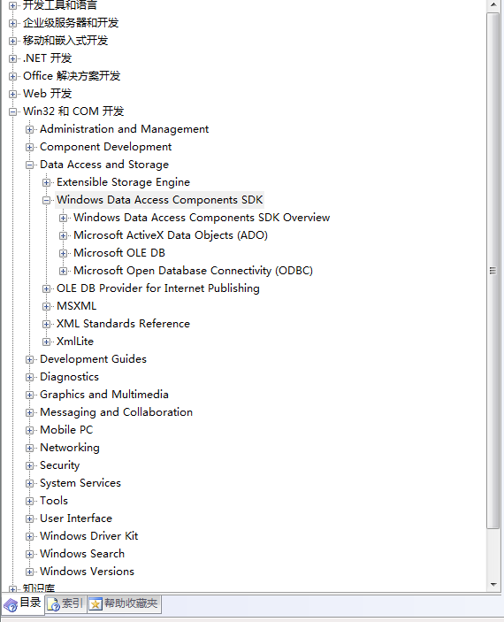
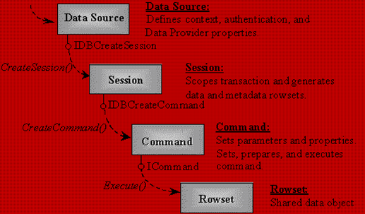

数据库是计算机中一种专门管理数据资源的系统，目前几乎所有软件都需要与数据库打交道（包括操作系统，比如Windows上的注册表其实也是一种数据库），有些软件更是以数据库为核心因此掌握数据库系统的使用方法以及数据库系统编程接口的使用方法是程序员非常重要的基本技能之一。所以我花了一定的时间学习了在Windows平台上使用COM接口的方式操作数据库。这段时间我会将自己学习过程中掌握的知识和其中的一些坑都发布出来，供个人参考，也方便他人学习
现在常见的DBMS主要有ORACLE、Sybase、Informix、DB2、Sql Server、Access、Visual Foxpro、MySql。由于目前我主要是在学习Windows平台上的编程技巧，所以这系列的内容将会以Windows平台为主，所以数据库选择了Sql Server，编程接口主要是ADO和OELDB.
Windows平台常见的数据库编程组件
目前Windows平台上主要使用的是ODBC、DAO、RDO、ADO、ADO.NET、OLEDB。
其他的数据库编程接口由于被微软弃用或者使用人数较少，等等原因我并没有关心他们，目前主要学习的是OLEDB和ADO编程。由于ADO是针对OLEDB进行的在封装的ActiveX控件，掌握了OLEDB，再学习ADO就没有什么难度了，所以我将重点放在OLEDB上，而对于ADO只会简单的进行简单的步骤说明。
OLEDB的基本概念
- 数据提供者和数据消费者：在OLEDB中将接口两端的软件分别称为数据提供者（一般指数据库这一端，着重与数据的组织存储）和数据消费者（指应用程序这一端，着重与数据库数据的展示与使用）。OELDB是一种针对两头的编程接口，它为数据提供者和消费者分别准备了一组接口，数据提供者主要实现一些接口，用于将数据库中的数据输出到应用程序或者根据应用程序的指令完成数据的操作，而数据消费者主要使用其中提供的编程接口，实现数据的获取或者更新等操作。（我觉得他们二者之间的关系就像是有一套标准的COM接口，一个负责调用，一个负责实现）从本质上说，OLEDB其实就是一个标准的数据库与应用系统间的数据标准交换接口，它的好处就是高效，通用和灵活。
- 数据源：一般来讲数据源可以理解为数据提供者或者理解为各个DBMS，但是在ADO中，数据源可以是文本文件，excel或者xml文件
MSDAC简介
MSDAC（Microsoft Data Access Components）微软数据库访问组件，目前MSDAC上主要有ADO、OLEDB、ODBC
在Windows的MSDN中提供了完整的MSDAC帮助文档，在MSDN中，选择“目录”–>”Win32和COM开发”–>”Data Access And Storage”–>”Windows Data Access Components SDK”中。它的下层目录就是各种组件的详细文档，它的整体结构如下:

OLEDB编程的基本思路
OLEDB编程的基本步骤如下：

- 首先创建数据源对象，指定链接数据库的相关属性，链接到数据库
- 接着创建会话对象
- 根据回话对象创建出Command对象
- 利用Command对象执行SQL语句，并返回结果集对象
- 读取结果集对象中的数据，并输出
- 最后关闭所有对象接口，关闭数据库连接
这些东西在后面的内容中会一一进行详细的说明，这篇博文就这样只开个头。